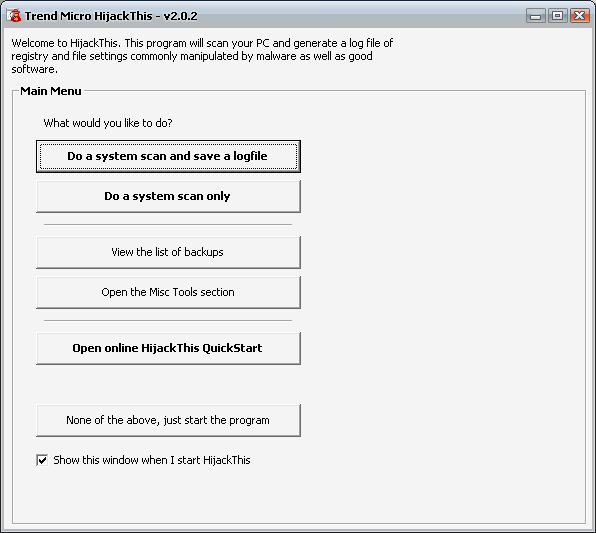
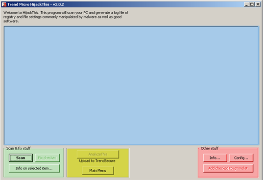
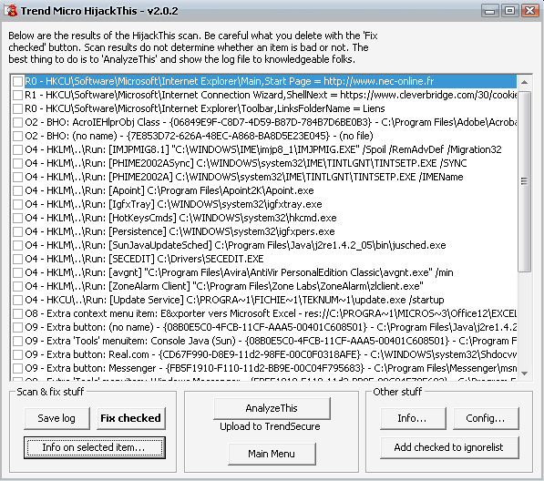

HijackThis est un programme d'analyse de votre système, créé par Merijn Bellekom, du célèbre Forum SpywareInfo, spécialisé dans l'étude et la suppression des malwares. Il est à présent en possession de la société Trend Micro, suite à un rachat en 2007.
Ce programme scanne donc votre système d'exploitation, ses principaux composants et points sensibles, en l'occurrence, les différents points de démarrage de votre système et les programmes qui s'y lancent, de même que les services qui n'appartiennent pas à Windows et autres BHO... Nous verrons dans ce tutoriel comment nous en servir, et aussi une petite introduction à la compréhension des rapports de ce puissant outil.
Enregistrez le fichier sur votre bureau, et procédez à son installation (ce n'est vraiment pas complexe ^^ ).
C'est bon ? C'est fait ? Eh bien, passons aux choses sérieuses.
Démarrez HijackThis via son icône, présente sur votre bureau, ou bien via le menu Démarrer > Tous les Programmes > HijackThis > HijackThis.
Vous voilà maintenant devant cette fenêtre :

Voici un rapide tour d'horizon de ce que propose ce menu, et ce qui nous intéresse.
Do a system scan and save a logfile : cette option balaye / numérise votre système, et génère un rapport qui s'affichera dans le Bloc-notes.
Do a system scan only : cette option balaye / numérise juste votre système.
View the list of Backup : cette option permet de voir la liste des sauvegardes qu'a effectuées HijackThis avant son lancement, ce qui permet de réparer une erreur assez facilement.
Open the misc tool section : cette option vous permet d'accéder à des options particulières d'HijackThis.
Open online Hijackthis quickstart : cette option ouvrira dans votre navigateur une page d'aide à l'utilisation d'Hijackthis.
None of above, just start the program : cette option vous mènera à la fenêtre principale d'Hijackthis, mais ne générera pas de rapport.
Prêts ? On commence avec l'analyse d'un journal et sa création ! :soleil:
Ah, quelle question ! C'est très compliqué, je vous l'annonce tout de suite, ça va pas être simple... Vous êtes prêts ?
Ouvrez HijackThis, et cliquez alors sur None of above, just start the program. Normalement, vous voici devant cette fenêtre :

Regardons un peu ce qu'elle contient. J'ai pour cela divisé la fenêtre en plusieurs couleurs, en procédant par petits morceaux.
La section bleue : cette section contiendra votre rapport et les cases qu'il faudra cocher. C'est la partie la plus importante de votre fenêtre.
La section verte : cette section est tout aussi essentielle dans l'utilisation du logiciel. Le bouton Scan porte particulièrement bien son nom vu qu'il permet de scanner votre système et d'afficher le rapport dans la zone adéquate. Le bouton Fix checked fixera les lignes sélectionnées.
Fixer ? Que signifie ce terme ?
Si vous préférez, on peut dire supprimer, retirer, c'est relativement la même chose. Le bouton Info on selected item vous affichera des informations sur les lignes dont vous aurez coché la case.
La section jaune : cette section vous permet d'accéder au menu de configuration de Hijackthis et vous donne aussi accès à un centre d'analyse de votre log.
La section rouge : cette section vous permet d'obtenir des informations complémentaires sur votre log, de configurer la liste d'exceptions lors des scans.
Passons maintenant à la création de votre log.
Si vous avez cliqué sur Do a system scan only ou encore sur Do a system scan and save a logfile, vous avez déjà sous les yeux votre rapport. Si ce n'est pas le cas, cliquez sur Scan. Le chargement peut être plus ou moins long.
Une fois que le logiciel a fini sa tâche, vous voici devant quelque chose dans ce genre :

Comme vous le voyez, c'est une longue (parfois très longue...) liste qui s'affiche devant vous, et c'est ce que l'on appelle un log. :) Une fois ce rapport généré, il ne vous reste plus qu'à savoir quoi cocher, puis de cliquer sur Fix checked afin de supprimer les éléments cochés (qui seront récupérables par la manipulation inverse avec l'option View the list of backup). Voilà pour le fonctionnement basique du logiciel, il existe beaucoup d'autres options, mais celles-là sont amplement suffisantes.
Même si les rapports ont l'air assez complexes, il faut savoir qu'après un petit temps d'adaptation, le lecture de ces logs devient une seconde nature. :) Pour exemple, nous allons prendre... hum... ... mon log, celui de mon système actuel (nettoyé, mais pas trop, histoire qu'il reste un peu de lecture :) ).
Lancez donc votre Hijackthis, et générez un petit log. Analysons point par point ses différents éléments.
L'en-tête du log
Les 4 premières lignes
L'en-tête du log contient quatre informations utiles pour le diagnostic d'un problème de sécurité, voici un exemple de ce qu'il affiche :
Logfile of Trend Micro HijackThis v2.0.2
Scan saved at 22:47:27, on 22/12/2008
Platform: Windows XP SP2 (WinNT 5.01.2600)
MSIE: Internet Explorer v6.00 SP2 (6.00.2900.2180)
Boot mode: Normal
Logfile of Trend Micro HijackThis v2.0.2 > Cette ligne vous donne la version de Hijackthis, ici la plus récente, la 2.0.2. Pour mémoire, il vaut toujours mieux avoir une version à jour, car si ce n'est pas le cas, il se peut qu'il y ait des bugs, ou qu'un élément malicieux se masque.
Scan saved at 22:47:27, on 22/12/2008 > Pas besoin de beaucoup d'explications ici je suppose, il s'agit simplement de la date du rapport.
Platform: Windows XP SP2 (WinNT 5.01.2600) > Cet élément vous indique le système d'exploitation, ainsi que le service pack du système et la version du noyau de Windows.
MSIE: Internet Explorer v6.00 SP2 (6.00.2900.2180) > Cet élément vous indique la version d'Internet Explorer ; dans le cas présent, il n'est clairement pas à jour d'ailleurs.
Boot mode: Normal > Ici on vous indique le mode de fonctionnement du système. Normal, vous indique qu'il est en mode... normal, Safe mode vous indiquera qu'il tourne en Mode sans échec.
Le listing des processus
Passons enfin à l'analyse d'un rapport en entier. Il vous faut savoir qu'un rapport se subdivise en 24 parties correspondant chacune à un point de votre système et de son registre, nous répartirons donc l'explication en autant de sections qu'il y en a. On trouve, avant les 24 sections, une liste des processus en cours d'exécution sur votre machine, ce qui permet de voir combien de processus sont lancés en général, et donc de voir par la même occasion si c'est de là que provient un certain ralentissement du système. Il est normal d'en avoir plus de 10, mais au-delà de 20, cela reste un peu excessif. Cette section du rapport n'est qu'à but informatif, et rien de ce qui est mentionné n'est fixable (cependant, les taskmngr de Windows permettent de mettre fin à un processus).
Les section R, N et F
Voici un exemple de ce que l'on peut trouver dans cette section.
Cette section liste les différentes pages de démarrage des navigateurs, qui sont inscrites dans le registre. Il est en effet possible de stipuler les pages de démarrage des navigateurs Internet Explorer (R) et Netscape/Mozilla (N) via le registre, et donc tout aussi facile de les modifier à votre insu ou même de les supprimer. Les lignes en F sont un peu spéciales, car elles traitent des programmes au démarrage de Windows, et non des navigateurs. Elle sont aussi un peu plus rares...
Les lignes 01, 02 et 03
Les lignes en 01 traitent des ajouts effectués dans votre fichier Hosts.
Les lignes 02 listent les BHO. Un BHO est un petit programme (souvent une simple dll) qui vient se greffer dans votre navigateur. Si beaucoup sont saines (la Google Toolbar, par exemple), d'autres sont très néfastes. En général, les BHO sont à proscrire, car elles consomment beaucoup de ressource et ralentissent donc votre navigation. Exemple de lignes 02 dans un log :
Les lignes 03, elles, scrutent les ajouts de toolbars dans le navigateur. Ces entrées sont parfois assez dangereuses, car beaucoup de toolbars infectieuses circulent sur le Net, et, comme pour les BHO, l'abus de toolbars nuit à la santé de votre navigateur. ^^ C'est cette clef du registre qui gère les différentes toolbars : HKLM\SOFTWARE\Microsoft\Internet Explorer\Toolbar.
Les lignes 04, 05 et 06
Les lignes 04 affichent tous les programmes qui sont lancés au démarrage via une valeur dans ces clefs du registre : affichent tous les programmes qui sont lancés au démarrage via une valeur dans ces clefs du registre :
Ces lignes-là sont particulièrement intéressantes car elle permettent de voir le nombre de programmes qui se lancent au démarrage de Windows. Donc, bien évidemment, comme pour les autres lignes, un trop-plein de lignes 04 n'est pas bon, et il convient d'en désactiver au démarrage soit en les fixant, soit en désactivant les dits programmes via msconfig (ne jamais désactiver vos protections antivirus, bien sûr ;) ). Cette section du rapport laisse également voir si une infection est présente, ce qui est utile au diagnostic de la machine. (Souvent en cas d'infection : un nom plus ou moins aléatoire.)
Ces lignes sont le point de démarrage le plus commun des malwares.
Les lignes 05, elles, vous indiquent si des restrictions quant à l'affichage des icônes d'option Internet dans le Panneau de configuration sont présentes. Tout se fait dans ce fichier-là : c:\windows\control.ini.
Les lignes 06 vous indiquent si des restrictions d'accès aux options Internet sont présentes, ce qui est parfois dû à un malware, ou par la politique de sécurisation de l'administrateur du système. Les valeurs se trouvent dans cette clef-là : HKCU\Software\Policies\Microsoft\Internet Explorer\Restrictions.
Les lignes 07, 08, 09 et 10
Les lignes 07 indiquent la présence de valeurs dans la clef suivante du registre : HKCU\Software\Microsoft\Windows\CurrentVersion\Policies\SystemDisableRegedit=1. Cette valeur définit si le registre est activé ou non par l'administrateur, et les différentes politiques de restriction qui y sont liées. Encore une fois, cela peut être dû à un malware, ou bien à un administrateur un peu sévère. :p L'exemple présenté indique que l'éditeur du registre, regedit, sera désactivé.
Les lignes 08 permettent de savoir si l'action du clic droit dans le contenu d'une page web n'est pas verrouillée par l'administrateur, en se référant à cette entrée dans le registre : HKEY_CURRENT_USER\Software\Microsoft\Internet Explorer\MenuExt. Exemple de ligne 08 :
O8 - Extra context menu item: E&xporter vers Microsoft Excel - res://C:\PROGRA~1\MICROS~3\Office12\EXCEL.EXE/3000
Les lignes 09 visualisent la présence d'ajout de boutons de navigation dans Internet Explorer, le tout étant stipulé dans la clef suivante : HKEY_LOCAL_MACHINE\SOFTWARE\Microsoft\Internet Explorer\Extensions registry key. Exemple de ligne 09 :
O9 - Extra button: (no name) - {08B0E5C0-4FCB-11CF-AAA5-00401C608501} - C:\Program Files\Java\j2re1.4.2_05\bin\npjpi142_05.dll
O9 - Extra 'Tools' menuitem: Console Java (Sun) - {08B0E5C0-4FCB-11CF-AAA5-00401C608501} - C:\Program Files\Java\j2re1.4.2_05\bin\npjpi142_05.dll
O9 - Extra button: Real.com - {CD67F990-D8E9-11d2-98FE-00C0F0318AFE} - C:\WINDOWS\system32\Shdocvw.dll
O9 - Extra button: Messenger - {FB5F1910-F110-11d2-BB9E-00C04F795683} - C:\Program Files\Messenger\msmsgs.exe
O9 - Extra 'Tools' menuitem: Windows Messenger - {FB5F1910-F110-11d2-BB9E-00C04F795683} - C:\Program Files\Messenger\msmsgs.exe
Ces lignes-là correspondent donc à l'ajout de la petite icône MSN, ou Java, dans la barre de navigation par exemple.
Les lignes 010 percent à jour d'éventuels hijackers des LSP de Windows. Un petit article de Wikipedia (en anglais uniquement) sur les LSP : http://en.wikipedia.org/wiki/Layered_Service_Provider. Les LSP sont ainsi une section particulière de la pile réseau de Windows, et certains programmes s'y installent (tel que l'assistant de connexion Wanadoo). Seulement, un programme se trouvant dans les LSP se trouve alors capable de lire l'intégralité du trafic réseau, ce qui est donc une aubaine pour les malwares ou les pirates. Parfois, sur la ligne 010, un petit commentaire s'affiche, précisant que la connexion Internet est cassée à cause d'un LSP manquant, il convient donc de réinitialiser le catalogue de Winsock, à l'aide de la commande suivante :
netsh winsock reset catalog
Suite à cette commande, il est parfois nécessaire de réinstaller les outils de connexion de votre FAI, soyez donc prudents.
Voilà, vous savez maintenant déchiffrer la moitié d'un log HijackThis... enfin, la moitié ! Nous attaquerons la suite du log dans la prochaine partie du tutoriel. :)
Les lignes en 011 correspondent à l'addition d'entrées dans le menu Avancée des Options Internet du navigateur Internet Explorer, en se basant sur les valeurs de cette clef du registre : HKEY_LOCAL_MACHINE\SOFTWARE\Microsoft\Internet Explorer\AdvancedOptions. Ce n'est pas une entrée très courante dans un log Hijackthis. :p
Les lignes 012 concernent, elles, les plugins d'Internet Explorer, lesquels sont rattachés à cette clef du registre : HKEY_LOCAL_MACHINE\software\microsoft\internet explorer\plugins. concernent, elles, les plugins d'Internet Explorer, lesquels sont rattachés à cette clef du registre : HKEY_LOCAL_MACHINE\software\microsoft\internet explorer\plugins.
Les lignes 013 font référence au changement du préfixe des barres d'adresse d'Internet Explorer. Prenons un exemple simple. Lorsque vous tapez dans IE : www.siteduzero.com, eh bien le navigateur ajuste l'adresse automatiquement en ajoutant http://. C'est ça, le préfixe, c'est l'ajout du http://, et il est possible de le modifier via la clef du registre suivante : HKEY_LOCAL_MACHINE\SOFTWARE\Microsoft\Windows\CurrentVersion\URL\DefaultPrefix\. Ainsi, il est possible de rediriger facilement n'importe quelle adresse que vous auriez entrée dans la barre d'adresse du navigateur, voici un exemple concret de ce qu'il est possible de faire : www.siteduzero.com devenant http://mauvaissite.net/www.siteduzero.com font référence au changement du préfixe des barres d'adresse d'Internet Explorer. Prenons un exemple simple. Lorsque vous tapez dans IE : www.siteduzero.com, eh bien le navigateur ajuste l'adresse automatiquement en ajoutant http://. C'est ça, le préfixe, c'est l'ajout du http://, et il est possible de le modifier via la clef du registre suivante : HKEY_LOCAL_MACHINE\SOFTWARE\Microsoft\Windows\CurrentVersion\URL\DefaultPrefix\. Ainsi, il est possible de rediriger facilement n'importe quelle adresse que vous auriez entrée dans la barre d'adresse du navigateur, voici un exemple concret de ce qu'il est possible de faire : www.siteduzero.com devenant http://mauvaissite.net/www.siteduzero.com
Les lignes 014 listent les modifications effectuées dans le fichier c:\windows\inf\iereset.inf. Ce fichier contient les paramètres de la configuration par défaut d'Internet Explorer, qui sont utilisés dès que vous demandez la remise à zéro des paramètres. Ainsi, une modification de ce fichier conduit à une modification d'une option quelconque, même si vous réinitialisez les paramètres par défaut.
Les lignes 15 montrent si une modification des zones de confiance a été effectuée. Si un site est ajouté dans cette zone, il bénéficie souvent d'un contrôle de sécurité moins élevé, et également d'une politique de restriction plus mince (et donc de faciliter l'intrusion d'un composant malveillant dans votre système). La clef en question se trouve ici : HKEY_CURRENT_USER\Software\Microsoft\Windows\CurrentVersion\Internet Settings\Zones\2.
Les lignes 016, 017, 018 et 019
Les lignes 016 correspondent aux différents contrôles ActiveX installés sur votre ordinateur. En général, elles se présentent comme ceci : correspondent aux différents contrôles ActiveX installés sur votre ordinateur. En général, elles se présentent comme ceci :
On reconnaît donc assez simplement la provenance de cet Active X : MSN. Celui-ci correspond à un bête jeu qu'aurait lancé l'utilisateur lors d'une conversation. Il faut donc toujours vérifier l'URL de cet ActiveX, afin de s'assurer que celui-ci est bien sain.
Les lignes 017 correspondent aux changements de DNS effectués sur votre machine. En effet, de base, Windows vous attribue lui-même des DNS, mais lors de l'installation des outils d'un FAI, ou de l'infection d'un type de malware précis connu sous le doux nom de DNS.Changer, de nouveaux DNS sont enregistrés, et apparaissent sous la forme de nouvelles lignes dans la section 017 du rapport :
Dans l'exemple présent, les DNS sont ceux qu'ajoute le cheval de Troie DNS.Changer, et qui redirigent l'utilisateur lors de recherches Google. Une recherche sur Google vous permet de définir si vos DNS sont sains ou non.
Les lignes 018, elles, listent les modifications ou les ajouts faits dans les différents protocoles de communication de Windows. De telles modifications permettraient à un éventuel pirate de sniffer vos connexions, d'obtenir tous les renseignement qu'il veut... Il existe aussi des cas bénins, comme par exemple celui-ci, correspondant au scanner de lien de l'antivirus AVG :, elles, listent les modifications ou les ajouts faits dans les différents protocoles de communication de Windows. De telles modifications permettraient à un éventuel pirate de sniffer vos connexions, d'obtenir tous les renseignement qu'il veut... Il existe aussi des cas bénins, comme par exemple celui-ci, correspondant au scanner de lien de l'antivirus AVG :
Les lignes 019 font référence aux changements de style de Windows : elle permettent de gérer la police, la couleur... Tout ceci se fait via cette entrée dans le registre :
HKEY_CURRENT_USER\Software\Microsoft\Internet Explorer\Styles\: User Stylesheets
Les sections 020, 021, 022, 023 et 024
La section 020 contient une liste de toutes les dll qui sont chargées en mémoire par user32.dll au démarrage. Elles sont souvent utilisées par des applications afin de faire appel à certaines fonctions, mais également par des malwares... encore une fois, Google vous signifiera si tel ou tel fichier est suspect. Exemples de lignes en 020 :
J'ai pris cet exemple car il est un peu spécial... Donc, comme nous l'avons vu, cette dll sera chargée par user32.dll au démarrage de Windows, mais elle passe par une clef du registre un peu spéciale pour ça : la clef Winlogon Notify. Donc, cette dll sera reliée à Winlogon, et ne pourra être supprimée ou stoppée si Winlogon est lancé (et il est hélas tout le temps actif. ;) ).
La section 021 quant à elle indique quels sont les programmes qui se lancent par l'intermédiaire d'Explorer.exe au démarrage de celui-ci... Ce démarrage s'effectue via cette clef du registre : HKEY_LOCAL_MACHINE\Software\Microsoft\Windows\CurrentVersion\ShellServiceObjectDelayLoad. quant à elle indique quels sont les programmes qui se lancent par l'intermédiaire d'Explorer.exe au démarrage de celui-ci... Ce démarrage s'effectue via cette clef du registre : HKEY_LOCAL_MACHINE\Software\Microsoft\Windows\CurrentVersion\ShellServiceObjectDelayLoad.
La section 022 liste tous les programmes qui se chargent par le biais du Planificateur de tâches de Windows, disponible dans le menu Démarrer. La clef du registre concernée est : HKEY_LOCAL_MACHINE\Software\Microsoft\Windows\CurrentVersion\ShellServiceObjectDelayLoad.
La section 23 liste tous les Services qui se lancent au démarrage de Windows de façon automatique. Les services sont très souvent employés par les malwares afin de se lancer dans le système au démarrage. Exemples de lignes en 023 :
O23 - Service: GEST Service for program management. (GEST Service) - Unknown owner - C:\Program Files\GIGABYTE\GEST\GSvr.exe
O23 - Service: Java Quick Starter (JavaQuickStarterService) - Sun Microsystems, Inc. - C:\Program Files\Java\jre6\bin\jqs.exe
O23 - Service: NVIDIA Display Driver Service (NVSvc) - NVIDIA Corporation - C:\WINDOWS\system32\nvsvc32.exe
O23 - Service: TuneUp Drive Defrag Service (TuneUp.Defrag) - TuneUp Software - C:\WINDOWS\System32\TuneUpDefragService.exe
O23 - Service: TuneUp Program Statistics Service (TuneUp.ProgramStatisticsSvc) - TuneUp Software - C:\WINDOWS\System32\TUProgSt.exe
O23 - Service: VNC Server Version 4 (WinVNC4) - RealVNC Ltd. - C:\Program Files\RealVNC\VNC4\WinVNC4.exe
(La gestion des services se fait via l'utilitaire services.msc, dans Exécuter.)
Et pour finir, la Section 024 contient elle tous les changements dynamiques effectués à votre arrière-plan de Windows, si par exemple c'est une page web ou un fichier en provenance d'Internet.
Voilà... vous en savez maintenant un peu plus sur les fameuses 24 sections du logiciel Hijackthis... c'est nettement moins mystérieux à présent, non ? :p
Je n'aborderai pas ici le cas des analyseurs automatiques, comme Hijackthis.de ou ZHP, pour la simple et bonne raison qu'ils sont pour moi inutiles et potentiellement dangereux. D'une part, ils ne sont pas forcément fiables à 100 % : les malwares se transforment à une vitesse impressionnante, et un système se basant sur le nom d'un fichier ne peut être efficace s'il doit suivre à vitesse humaine uniquement. (Une menace peut changer de nom, de site web plus de 500 fois par jour...) À cela on peut ajouter que les malwares installent des fichiers à noms aléatoires le plus souvent, ce qui rend donc encore une fois obsolète de tels outils. D'autre part, Hijackthis doit rester un outil manié avec prudence et en connaissance de cause, une fausse manipulation ou une erreur de diagnostic de votre part peut se révéler catastrophique pour votre machine ou celle d'un autre. J'en appelle donc à la prudence avec ces fameux analyseurs, un peu de bon sens suffit... et rien n'exclut leur utilisation dans le cadre d'un diagnostic rapide... ;)
Hijackthis est devenu au fil des ans un outil de plus en plus populaire, et pour cause : sa capacité à diagnostiquer différents malwares ou à dépoussiérer un Windows un peu vieillot font de lui un outil quasi indispensable pour tout bon bidouilleur qui se respecte. Et comme vous l'avez vu tout au long de ce tutoriel, il n'est pas si compliqué à faire fonctionner. ;) Il existe bon nombre de forums se spécialisant dans l'analyse de ces logs, comme Malekal.com, Vista-xp.fr, zebulon.fr... N'hésitez pas à y faire un tour. ;)